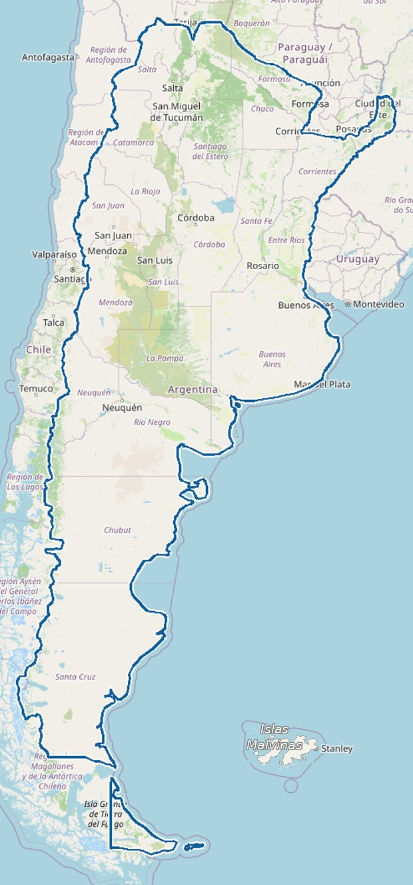

Servidor MCP · Código abierto (MIT)
Los geodatos públicos de Argentina,dentro de tu agente de IA.

Mapa © OpenStreetMap contributors
Qué hace
Un ejemplo real
Vos le decís
«Quiero un mapa de los ferrocarriles del país.»
El agente encuentra
- Ferrocarril
- Estación de ferrocarril
- Puente
- Indicador de kilómetros
Cinco herramientas
search_layersBusca capas por tema o palabra clave en el catálogo embebido.
suggest_layersSugiere capas a partir de un objetivo en texto libre (determinista, sin LLM), con filtro opcional por tipo de servicio WFS/WMS.
describe_layerDevuelve los campos reales de una capa. Obligatorio antes de consultarla.
query_layerTrae features con filtros, paginación y bbox en EPSG:4326, reproyectado al CRS nativo de cada capa.
geocodeConvierte una dirección en coordenadas con la API Georef (gratis, sin key).
Cómo usarlo
De cero a tu agente en cuatro pasos
- Cloná e instalá
git clone https://github.com/FranprzDev/geotucuman.git cd geotucuman npm install
- Compilá el servidor
npm run build
Genera dist/stdio.js y dist/http.js con xmcp. - Conectalo a tu cliente MCP (ejemplo Claude Code):
{ "mcpServers": { "geomcp": { "command": "node", "args": ["/ruta/geotucuman/dist/stdio.js"] } } } - Listo: las cinco herramientas quedan disponibles en tu agente.
Corre local por stdio. También compila un transporte HTTP (npm run start:http) pensado para hosting futuro: hoy no hay un servidor remoto público.
En una frase
Descubre la capa, dice quién la publica y de cuándo es, y la consulta en vivo en la fuente oficial. No dibuja mapas ni copia datos.
Cobertura y fuentes
De dónde salen los datos
El catálogo embebido descubre hoy 22 Planeamiento · 76 Catastro · 192 IGN · 253 RIDES = 543 capas, generado desde los GetCapabilities en vivo (si un endpoint cae, se conserva un snapshot).
IGN y la API Georef tienen cobertura nacional. Las fuentes provinciales integradas hoy son de Tucumán; sumar otra provincia es agregar su servicio WFS o WMS a la configuración.


No es exhaustivo: hay más datasets públicos dispersos. Faltantes conocidos: el portal de Datos Abiertos de Tucumán (https://datos.tucuman.gob.ar/) y el enriquecimiento con metadatos IDERA.